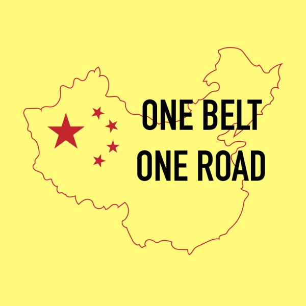
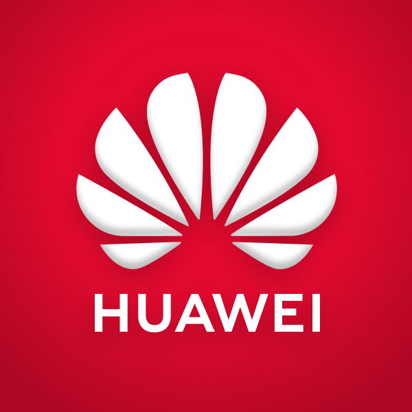
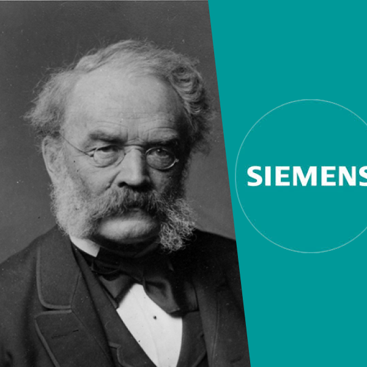
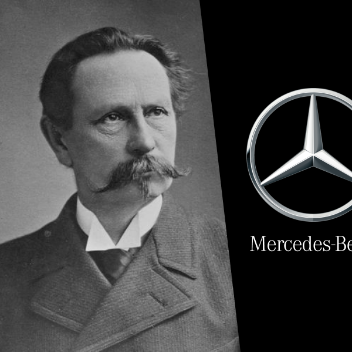

Introduction
The robots are coming!
Well, they're not quite here yet — depends on how long Elon Musk wants to keep Optimus all to himself — but it seems clear that this is the direction in which the world is heading for the foreseeable future. Here are just a few headlines from the past few weeks:
🇨🇳 Chinese humanoid robot could be the future of affordable in-home care (2024.10.19)
🇰🇷🇯🇵 Toyota Joins With Hyundai’s Boston Dynamics on AI-Powered robots (2024.10.17)
🇺🇸 Could Elon Musk’s AI Robots Save A Troubled Education System? (2024.10.12)
From the countries mentioned, it looks like the East Asian / American Robot Race that I predicted in my earlier article is already starting to come to fruition. Expect to hear a lot of robotics and AI news from these countries (China, Korea, Japan, US) specifically, as they are currently the only ones capable of producing high-end humanoid robots.
I believe that the best forerunner to Xi is in fact 🇩🇪 Otto Von Bismarck (r. 1862 - 1890), the Iron Chancellor of Germany (formerly Prussia).
Let's take a look at these two men, under a few categories:
-
🏆 Ambition
-
🧠 Ideology
-
📈 Development
-
⚔️ Unification
-
👑 Nationalism
-
💵 Crisis
-
📕 Reform
-
🎯 Expansion
Humanoids
Introducing the Hyundai Atlas — your personal home assistant.
Timeline
My Predictions
Of course, one of the benefits of historical literacy is that it allows us to see parallels to our present-day lives.
So with all of that being said, I would like to make 3 predictions about the future of Europe over the next 25 years. Some of these events are already starting to materialize, but I've taken the liberty to weave them together into a grand narrative for us to follow.
1) 💴 XiJinpingCareTM
When the Panic of 1873 hit Germany, the 🌹 Social Democratic Party was formed to push for workers' rights and compensation.
Bismarck initially suppressed the SPD with the 🇩🇪 Anti-Socialist Laws — only to eventually realize that the German people's frustration could not be contained, and shifted to actually introduce 🇩🇪 State Socialism policies in order to protect his authority.
🔮 I predict that the Chinese Communist Party (CCP) will introduce a series of welfare reforms & social safety nets in order to stabilize society.
Xi Jinping has previously denounced what he calls "welfarism" which breeds laziness among the people. While an ironic statement to say the least, coming from the leader of a supposed "Communist" party, this matches Bismarck's initial reluctance to introduce serious reforms.
However, as the Chinese people's frustrations begin to mount, some kind of state-sponsored relief would greatly aid the CCP's grip on authority.
2) 🇨🇳 Chinese Expansionism
When the Panic of 1873 hit Germany, Bismarck finally decided that Germany had to expand outwards in search of new markets & political influence.
The German people were filled with nationalistic fervor, and the new government was hungry to flex its newfound strength overseas. Although existing European powers had already taken most of the "easy" targets, Germany still managed to form the third-largest empire during that time (after Britain and France).
German expansion followed a common 3-pronged strategy:
-
🌍 Political expansion
-
🏦 Economic expansion
-
💃 Cultural expansion
🌍 German Colonial Empire (1884 - 1920)
Political expansion
Starting with the 🌍 Berlin Conference (1884), Germany began to establish formal colonial outposts overseas.
The German Colonial Empire eventually grew to include territories such as modern-day 🇨🇳 Qingdao, 🇨🇳 Jiaozhou, 🇳🇦 Namibia, and 🇹🇿 Tanzania,
🏦 Colonial Companies
Economic expansion
Private colonial corporations such as the 🏦 German East Africa Company, the 🏦 German New Guinea Company, and the 🏦 Jaluit Company were established in order to manage the new colonial holdings & keep them reliant on Germany.
✝️ Christian Missionaries
Cultural expansion
Protestant missionary societies such as the ✝️ Berlin Missionary Society, the ✝️ Rhenish Missionary Society, and the ✝️ North German Missionary Society spread European Christian ideals all over Africa and Asia.
As China rises, we're going to see the CCP pushing for more overseas activity.
We're already starting to see glimpses of this, with the recent China-Africa summit highlighting just how much economic & political influence China has over virtually the entire African continent.
Underdeveloped nations such as those in 👩🏾 Sub-Saharan Africa or 👩🏽 South Asia will be where China exercises the most overt power, while middle-power regions such as 👩🏽 Latin America or the 👩🏻 Middle East / North Africa area will also see more Chinese influence albeit on a lesser scale.
🔮 I predict that we're going to see a sudden & rapid rise of Chinese influence globally in the political, economic, and cultural spheres.

🌍 Belt and Road Initiative
Political expansion
Countries with sign up to the BRI will inextricably link themselves to Chinese credit and policies, allowing China to secure new markets for its finished goods
The host countries won't be able to enact high tariffs in response, since they're too dependent on China for new loans and bailouts.

🏦 Go Out policy
Economic expansion
As competition heats up in the Chinese market, many private corporations will be "pushed" to international markets in order to survive.
We're already seeing the early phases of this, as companies such as 🏦 BYD, 🏦 LONGi, and 🏦 Huawei already expanding around the world.
🏯 Chinese Wave?
Cultural expansion
Similar to the 🇰🇷 Korean Wave and 🇯🇵 Japanophilia, it's reasonable to expect a similar spread of Chinese popular culture as its economic status grows as well.
However, this may be mostly limited to non-Western audiences due to the political tensions between China and the West.
Let's see what the future holds.
3) 🤖 Chinese Technological Renaissance
Immediately after unification, Germany began an incredible 50-year run of producing the world's best scientists, engineers, and inventors.
Although the "German-dominated world" that doomsayers prophesied ultimately did not come true in the end, the period following 🇩🇪 unification (1871) to the outbreak of 💣 World War I (1914) firmly cemented Germany's place as a major player in Europe in a way that it had simply not been before.
Many of these new industries still form the foundation of Germany's economy, and is why "Made in Germany" has such a premium and high-quality connotation as it does around the world.
-
🧬 Science
-
🧠 Engineering
-
⚙️ Manufacturing
🧪 Chemistry
Science
👨🏻 Fritz Haber (1868 - 1934) and his invention of the 🧪 Haber-Bosch Process (1909) pioneered modern fertilizers.
👨🏻 Fredrich Bayer (1825 - 1880)'s company went on to invent 🧪Aspirin (1899).
German companies such as 🏦 BASF and 🏦 Bayer still dominate the chemical / biomedical industries, making Germany a world leader in synthetic chemistry.

💡 Electrical Engineering
Engineering
👨🏻 Werner von Siemens (1816 - 1892) was an early electrical engineer, generating important new inventions such as the ⚡️ trolley bus (1882), ⚡️ electric locomotive (1879), and ⚡️ electric elevator (1880).
His company, 🏦 Siemens AG, remains one of the world's leading industrial automation & transport companies.

🚗 Automobiles
Manufacturing
👨🏻 Karl Benz (1844 - 1929) and his invention of the 🚗 gasoline car (1885) kickstarted the German auto industry.
👨🏻 Gottlieb Daimler (1834 - 1900) invented the world's first 🛵 motorcycle (1885).
Their companies would eventually merge to form the 🏦 Mercedes-Benz Group, which still remains one of the world's largest car manufacturers.
We're seeing similar developments now, mostly with the rise of advanced Artificial Intelligence systems.
🇺🇸 America and 🇨🇳 China will obviously be the major players in this race, but I don't think we should discount the potential roles of countries like 🇰🇷 South Korea, 🇹🇼 Taiwan, or 🇸🇬 Singapore either. All of these nations are facing demographic crises and low birthrates, which may force innovation on the robotics / AI side in order to replenish the shrinking labor force.
🔮 I predict that the East Asians / Americans will lead a new renaissance of technological invention & discovery, primarily led by the US-China competition.
🧠 Generative AI
Science
👨🏻 Robin Li (1968 - ), the founder of 🏦 Baidu , has been at the forefront of pioneering China's native AI industry.
👨🏻 Kai-Fu Lee (1834 - 1900), in his book 📕 AI Superpowers (2018), outlined his belief that China's data advantage will ultimately help it win the AI competition with the US.
Big tech companies such as 🏦 Baidu, 🏦 Huawei, and 🏦 Tencent will undoubtedly continue to make big advances in AI technology.
🙍♂️ Drones
Engineering
👨🏻 Frank Wang (1980 - ) is a Chinese aerospace engineer, whose team has produced cutting-edge drones such as the 🛸 Phantom (2013), 🛸 Mavic (2016), and the 🛸 Spark (2017).
His company 🏦 DJI is the world's largest manufacturer of commercial drones.
🤖 Humanoid Robots
Manufacturing
This is still a new industry, but China is the most serious country when it comes to manufacturing humanoid robots.
Companies such as 🏦 Unitree , 🏦 UBTech , and 🏦 Siasun are already starting to produce new robot models at a rapid scale, and I think it's reasonable to expect a massive explosion in 2025.
Final Words
China is still the future for now, even though it's facing big problems at the moment.
As we all know, Germany never quite achieved its 20th-century dream of displacing Anglo-American hegemony to become the world's dominant power. The grand world-conquering visions of 🤴🏻 Wilhelm II (r. 1888 - 1918) and 👨🏻 Adolf Hitler (r. 1933 - 1945) both ultimately failed, leaving Germany relegated to being a continental land nation, rather than a world superpower.
However, Bismarck's greatest achievement — the unification and industrialization of the modern German state — still goes down in history as one of the most significant events of the 19th century.
Germany is still the most powerful nation in the EU, the de facto leader of the European continent, and the 3rd or 4th largest economy in the world. Bismarck's dream of a powerful Germany continues to live on, even though not quite in the form that he may have imagined.
As of late 2024, all signs indicate that Chairman Xi's China will follow a similar path.
China will likely never completely replace the United States in terms of global influence, nor is it obvious that this is what the CCP leadership even truly wants. America's overwhelming geographical advantage aside, I am not sure if any "Old World" power will be able to overtake the US anytime in the next few decades.
However, Xi's greatest achievenment — the unification and industrialization of the modern Chinese state — is bound to go down as perhaps the most significant event of the 21st century.
But that opens up another horrifying possibility — now that the stage is set, will we see a World War I-level catastrophic event in East Asia?
Once again, let's pray we don't live to see that far.